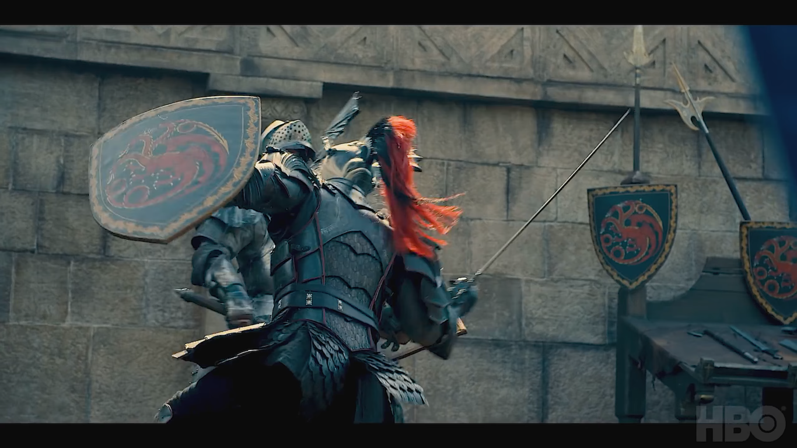
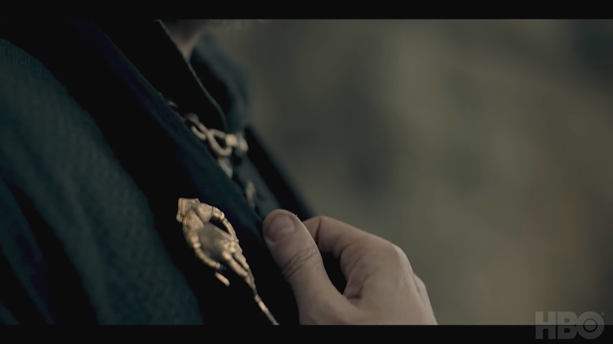
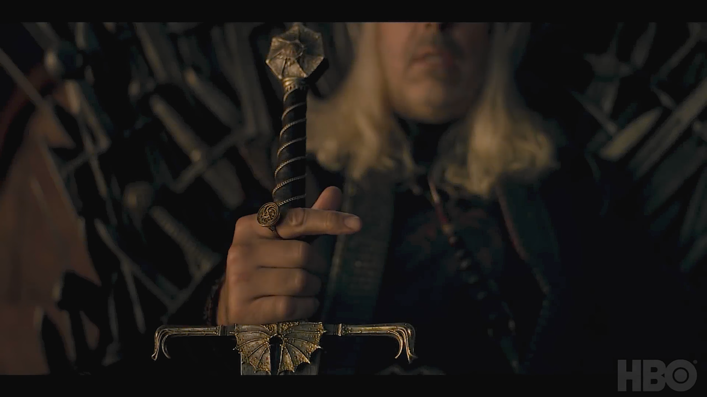
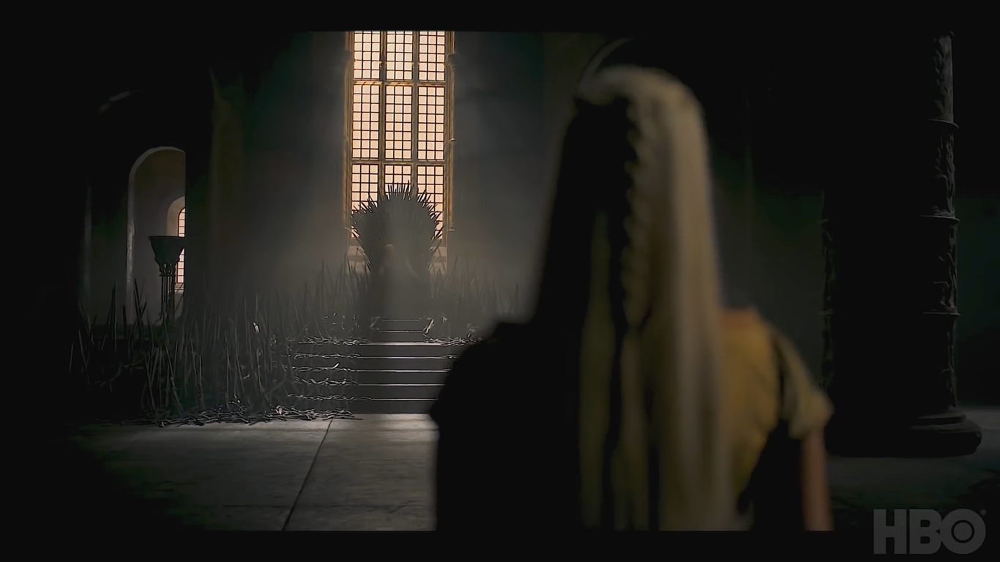

Game of Thrones
Inicio
Login
Cadastro
O site oficial
da série mais amada
do mundo!
Noticias de Game of Thrones
Trailer de House of the Dragon
Série derivada de Game of Thrones, intitulada House of The Dragon,
finalmente ganha seu primeiro trailer e encanta os fãs com sua
atmosfera e enredo! O vídeo, por mais que seja curto e não revele
muitos detalhes, deixou boas impressões e alcançou mais de 13 milhões
de visualizações. A estréia é prevista para 1 de Janeiro de 2022.
História é baseada no livro Fogo e Sangue de George R. R. Martin
e se passa 200 anos antes dos acontecimentos de Game of Thrones.
Como o nome sugere, a série será focada na Casa Targaryen e
irá mostrar a desastrosa Guerra Civil que ficou conhecida como
A Dança dos Dragões
.
   
Explore nossa plataforma